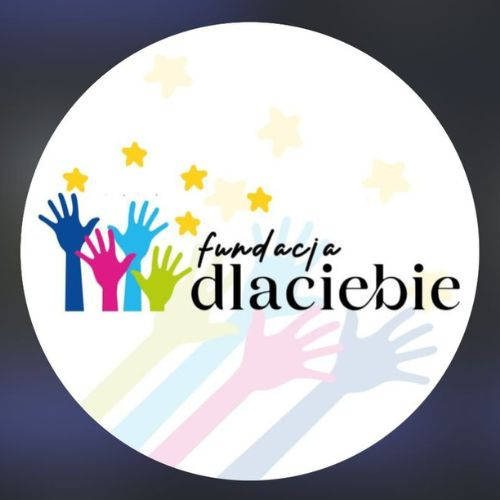
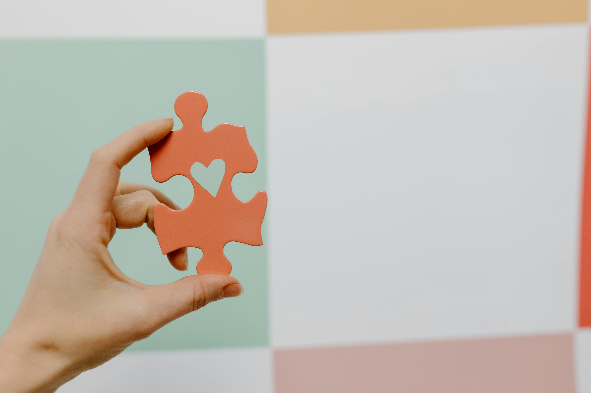

Wspieramy, inspirujemy, działamy!

Fundacja Dla Ciebie działa na terenie Koszalina, wspierając lokalną społeczność poprzez działania edukacyjne, społeczne i zawodowe.
Jednym z naszych kluczowych projektów jest organizacja bezpiecznego i dostępnego przewozu osób po mieście, realizowanego przez kierowców zatrudnionych w ramach fundacji.
Dzięki dofinansowaniu i wsparciu, osoby wcześniej wykluczone z rynku pracy — dziś mają stabilne zatrudnienie, realny wpływ na życie innych i poczucie przynależności.
Pomagamy — i dajemy pracę tym, którzy chcą pomagać.
Każda pomoc się liczy! Możesz przekazać darowiznę na nasze konto:
Nr konta: 00 0000 0000 0000 0000 0000 0000
Wesprzyj nasEmail: kontakt@dlaciebie.fundacyjni.pl
Instagram: @fund.dlaciebie